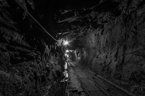
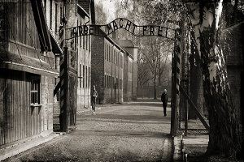

Bound by the heritage of the region, its historical dynamics,
its numerous cultures and the leading role of industry, and yet recognizing
Silesia’s intellectual and artistic background, Muzeum Śląskie provides a space for
dialogue with the past and the achievements of modernity to further explore Silesia,
Poland and Europe. The underground space also includes educational rooms, a library
with a reading room, an auditorium with 320 seats, an educational corner for children
and space for temporary exhibitions that is 12.5 m high. After exploring the riches
of the depths of Muzeum Śląskie, you might want to have a look at Katowice from quite
a different angle offered by our observation tower. The observation platform is located
40 metres above the ground. The former Warszawa II shaft offers views of the entire
Culture Zone and the city skyline. After a day of observing art, you might also want
to head for one of the three museum restaurants.
The Guido mine

City tours katowice
The guido museum has 3 different types of underground journey.
You will go there by authentic elevator, which is using in others active coal mines in Poland.
In guido mine you can decide which type of adventure you want to join. Every type of journey are different.
1. First one starts in 170 m below the surface. Guide show you how hard work is coal miner, how it's look like when is dark,
hot and you must doing a lot of dangerous stuff every day.
Actually you will be feel underground conditions on your skin. On the second level 320 you will see the biggest underground machines.
Part of you route will be by suspended electric rail. This is only one type of rail on the all world which is prepared to tourists.
The Guido mine

City tours katowice
The Auschwitz concentration camp was a network of concentration and extermination
camps built and operated by Nazi Germany in occupied Poland during World War II.
It consisted of Auschwitz I (the original concentration camp), Auschwitz II–Birkenau
(a combination concentration/extermination camp), Auschwitz III–Monowitz (a labor camp
to staff an IG Farben factory), and 45 satellite camps.